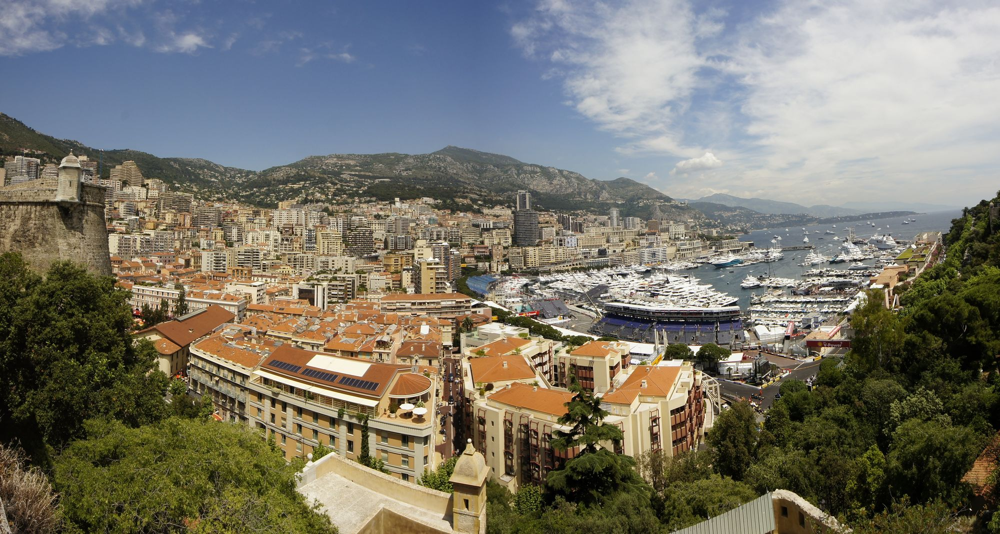

SSCI 591 Project 2
Monaco
F1 Circuit Map
A map of the Monaco F1 circuit and seven places along the route.
Explore the StoryMapRoute geometry | geographic north upN

StoryMap
A city becomes a circuit
Scroll through the story and explore its interactive web map.
Open the StoryMap in a new tabCircuit map
The urban loop
Seven locations
Explore the Monaco circuit.
Scroll through seven places, or select a numbered point on the map. Use "Full route" to restore the overview.
Map summary
What the map shows
The circuit connects several parts of Monaco in one short route. Some sections run uphill, while others follow the harbor. The map helps readers see how these places fit together. It does not include live road closures or race-day access information.
Data sources
About the data
Route & story stops
The route is adapted from Tomislav Bacinger's unofficial, MIT-licensed GeoJSON dataset (Bacinger, n.d.). Seven approximate story stops were curated for this project, referencing the FIA's 2025 circuit map (Fédération Internationale de l'Automobile [FIA], 2025). The seven locations are approximate.
Coordinates & limits
Both GeoJSON layers use WGS 84 longitude and latitude (EPSG:4326). The preview basemap uses Web Mercator. The 3.337 km figure comes from FIA documentation (FIA, 2025).
Sources and credits
Further reading
- Fédération Internationale de l'Automobile. (2025, May 22). Circuit map-Monaco 2025-Revised. Official length and circuit-map reference.
- Bacinger, T. (n.d.). f1-circuits [GeoJSON dataset]. Retrieved October 4, 2026. MIT license.
- Basemap © OpenStreetMap contributors. Preview mapping with Leaflet, BSD license.